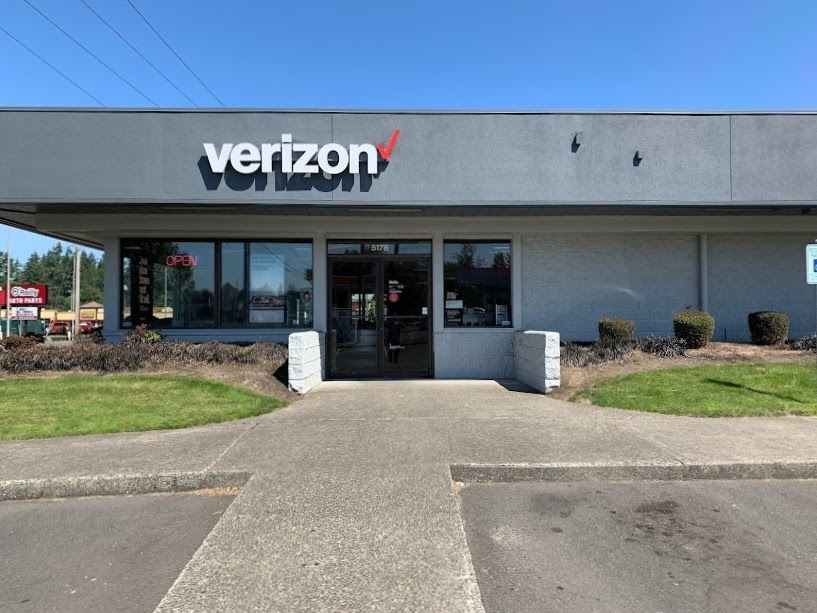

Kamal's School and Work Experiences
Kamal had an unusual school experience from an early age. In kindergarten, his teacher noticed that he was bored with some of the learning material, and tested him on the material of next year. He showed that he had already learned the content of first grade, and was told to skip the grade and go straight to second. He continued classes normally until he was asked to take an I.Q. test. Little did he know, this test was to decide which kids would be selected for the Highly-Capable Program. He was sent to another school to participate in the program in 5th and 6th grade.
Kamal's high school life was fairly normal, but he took classes at South Puget Sound Community College for his second half through the Running Start program. He was then accepted into the University of Washington - Tacoma Campus, studying Interdisciplinary Arts and Sciences online. He is on track to graduate with his Bachelor's degree at nineteen years old.
Kamal worked as a bagger at Fred Meyer during 2021 to pay for college. He worked his way up to the Electronics Department, but the pay was not much better than in his last position. Because of this, among other reasons, he ended up leaving Fred Meyer and joining Cellular Sales, an authorized Verizon dealer.